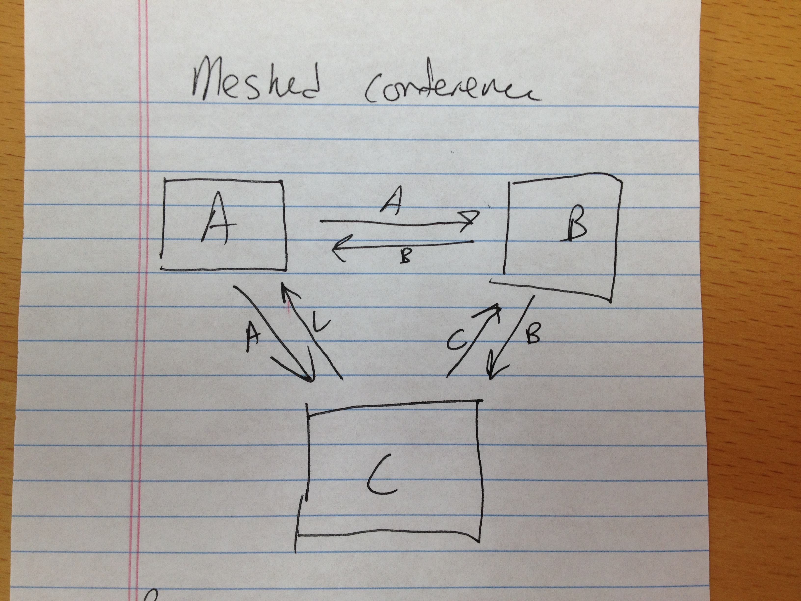
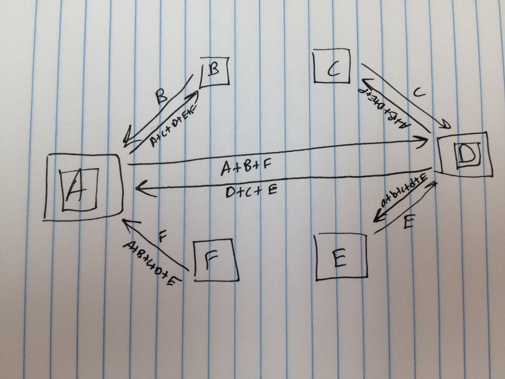

WebRTC is Peer-to-Peer (usually)
Peer-to-Peer is awesome
Until it isn't
Audio Vocabulary 101
- Transcoding
- Mixing
- Automatic gain control (AGC)
- Acoustic echo cancelation (AEC)
- Recording
Full Meshed Conference

Larger Full Meshed Conference
Star Mesh Conference: Endpoint as Mixer
Multi-Star Conference

Multipoint Control Unit (aka 'Media Server')
Larger MCU
Advantages of MCUs
- Offloads processing from endpoints
- Recording / Transcription
- Re-broadcast (podcasts, live gaming events, etc)
- Sound Effects / Text-to-Speech / Music
Geolocation
Redundancy / Fault Tolerence